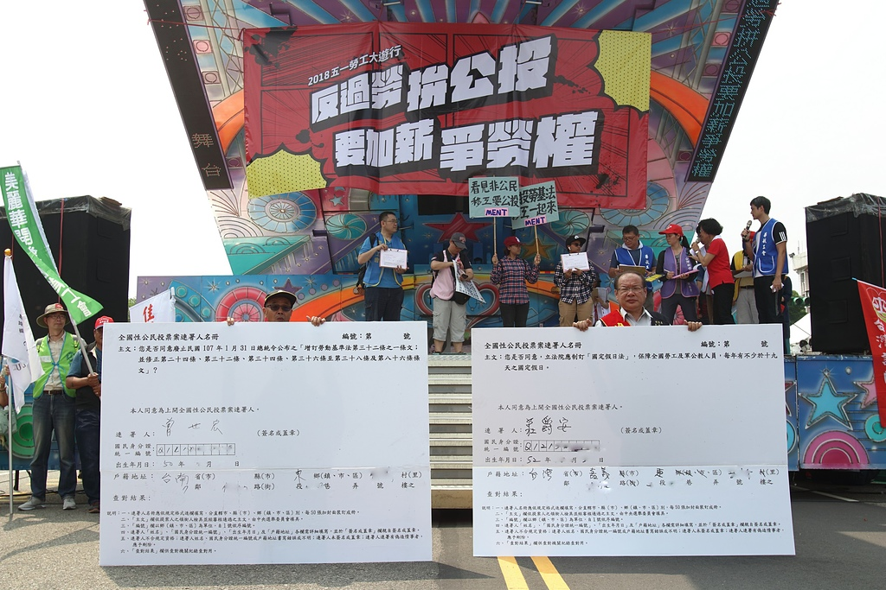
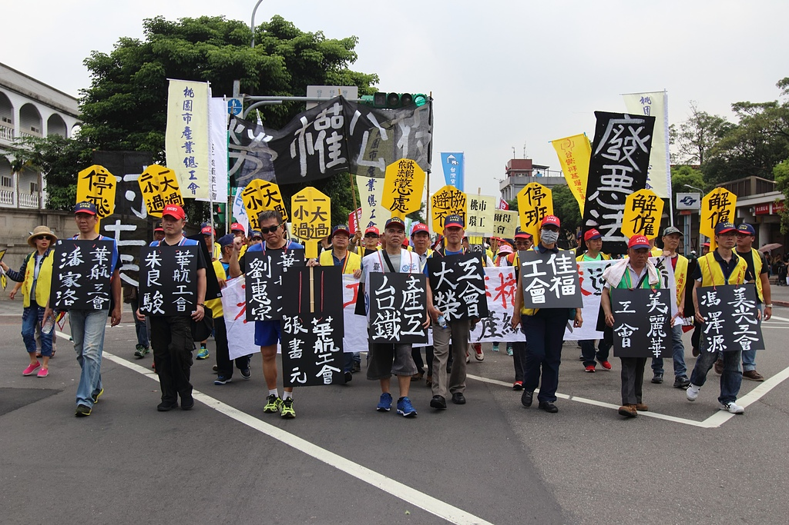
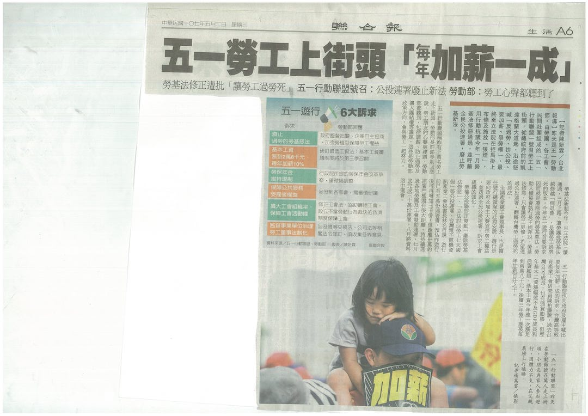

在凱道展示「勞權公投」聯署書，呼籲各界加入聯署，圖：張榮隆

兩項勞權公投也已經獲得近5萬人連署。遊行隊伍出發前，也為最近過勞、工安意外死亡的勞工、警消進行默哀，圖：全金聯

因爭取勞工權利受打壓的工會幹部，走在隊伍的前頭，象徵勞工不畏懼資方打壓，圖：張榮隆

遊行抗議今年初《勞基法》修惡通過，並發動「廢除勞基法修惡」、「立法還七天國假」公投連署，遊行最後在現場施放「狼煙」以示宣戰決心，圖：張榮隆
